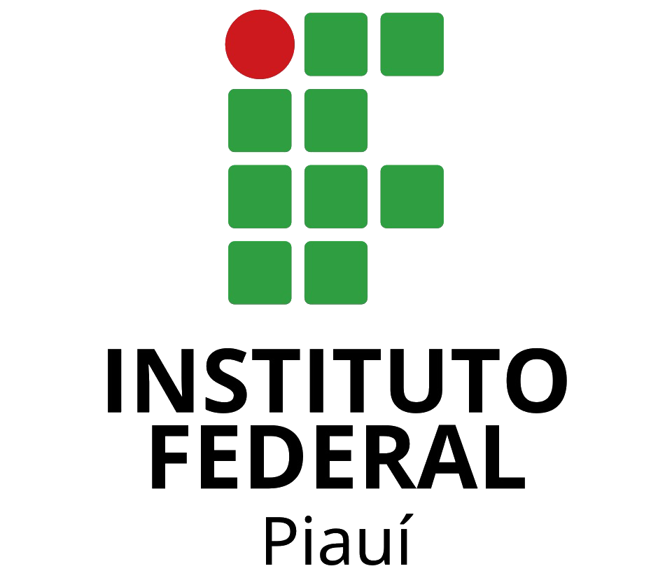

Técnico em Meio Ambiente — Concomitante/Subsequente
1º Módulo · Ano/Período 2026/2
Prof. Diego Cordeiro de Oliveira

Promover uma educação de excelência, direcionada às demandas sociais.
Roteiro de hoje — apresentação da disciplina e dos caminhos do semestre:
Anote suas dúvidas: os ambientes virtuais (professordiegocordeiro.com.br e SUAP) concentram materiais, atividades e avisos ao longo do semestre.
E-mail: diego.cordeiro@ifpi.edu.br — use também o Comunicador e o SUAP para as demandas da disciplina.
Objetivo geral: capacitar o estudante a compreender os conceitos básicos de informática — desde o seu surgimento e evolução histórica até a aplicação no dia a dia — e a utilizar o computador como instrumento de gestão, monitoramento e tomada de decisão ambiental.
Evolução da informática e sua relação com as ciências ambientais; utilização do pacote Office como ferramenta de elaboração de documentos técnicos, análises de dados e apresentações; introdução e prática com softwares da área ambiental (localização, imagens de satélite e estatística básica); ética, responsabilidade e inovação digital.
Ao final da disciplina, espera-se que o estudante seja capaz de:
As habilidades são construídas de forma cumulativa: cada unidade do conteúdo programático retoma e amplia a anterior.
| 1 Introdução à Informática | 2 Segurança da Informação | 3 Sistemas Operacionais |
|---|---|---|
| 1.1 Histórico dos computadores | Conceitos básicos | 3.1 Fundamentos e funções |
| 1.1.1 Hardware | Proteção de dados | 3.2 Sistemas operacionais existentes |
| 1.1.2 Software | Boas práticas | 3.3 Utilização de um sistema operacional |
| 3.3.1 Ligar e desligar o computador | ||
| 3.3.2 Interfaces de interação | ||
| 3.3.3 Área de trabalho | ||
| 3.3.4 Gerenciamento de pastas e arquivos | ||
| 3.3.5 Ferramentas de sistema e configurações pessoais |
Organização dos arquivos de campo, uso seguro dos dados coletados e configuração do computador de trabalho.
| 4 Fundamentos e serviços | Recursos e boas práticas |
|---|---|
| 4.1 Histórico e fundamentos | 4.2.1.3 Pesquisa de informações |
| 4.2.1 World Wide Web | 4.2.1.4 Download de arquivos |
| 4.2.1.1 Navegadores | 4.2.1.5 Correio eletrônico |
| 4.2.1.2 Sistema acadêmico | 4.2.1.6 Boas práticas de comportamento |
Pesquisa de legislação e dados ambientais, download de bases públicas, uso do sistema acadêmico e comunicação técnica por e-mail.
| 5 Funcionalidades básicas | Formatação e recursos |
|---|---|
| 5.1 Visão geral | 5.6 Inserção de quebra de página |
| 5.2 Digitação e movimentação de texto | 5.7 Recuos, tabulação, parágrafos, espaçamentos e margens |
| 5.3 Nomear, gravar e encerrar sessão | 5.8 Listas, marcadores e numeradores |
| 5.4 Controles de exibição | 5.9 Modelos |
| 5.5 Correção ortográfica e dicionário | 5.10 Figuras e objetos |
Elaboração de relatórios técnicos, laudos e documentos de licenciamento com formatação padronizada.
| 6 Fundamentos | Análise de dados |
|---|---|
| 6.1 Visão geral | 6.4 Classificando e filtrando dados |
| 6.2 Fórmulas e funções | 6.5 Formatação condicional |
| 6.3 Formatando células | 6.6 Gráficos |
Tabulação de dados de monitoramento, indicadores e séries históricas, com gráficos que apoiam a análise e a tomada de decisão.
| 7 Conceitos básicos | Recursos avançados |
|---|---|
| 7.1 Visão geral do software | 7.5 Listas, textos, desenhos, figuras e som |
| 7.2 Assistente de criação | 7.6 Vídeo, gráficos, organogramas, cores e plano de fundo |
| 7.3 Modos de exibição de slides | 7.7 Anotações de apresentação |
| 7.4 Impressão de apresentações, anotações e folhetos | 7.8 Transição de slides, efeitos e animação |
Apresentação de resultados de projetos e defesa técnica de dados para a comunidade escolar e órgãos ambientais.
| 8 Aplicações ambientais | Temas transversais |
|---|---|
| Ferramentas de localização | Ética e responsabilidade digital |
| Gerenciamento de imagens de satélite | Segurança e qualidade das informações |
| Estatística básica | Sustentabilidade |
| Inovação digital |
Uso de imagens de satélite e de análises estatísticas no monitoramento ambiental e na elaboração de relatórios técnicos.
Aulas expositivas e dialogadas, articulando teoria e atividades práticas contextualizadas à área de Ciências Ambientais, com base em três momentos pedagógicos:
As atividades práticas são sempre acompanhadas de orientação individual ou coletiva, com resolução de problemas reais.
Todo o material, as atividades semanais e os avisos ficam concentrados nesses dois ambientes.
As aulas práticas acontecem no Laboratório de Informática; as exposições teóricas utilizam o datashow e o quadro branco.
A avaliação é contínua, priorizando os aspectos qualitativos sobre os quantitativos, conforme o Art. 58 da Organização Didática. Além da prova escrita bimestral, são aplicados ao menos quatro instrumentos de naturezas distintas por bimestre.
| Bimestre | Instrumento | Critérios / Data | Valor |
|---|---|---|---|
| 1º | Atividades complementares ao conteúdo | Compreensão, interpretação e resolução de problemas — plataformas professordiegocordeiro.com.br e SUAP; entrega semanal | 2 pts por atividade |
| 1º | Prova escrita | Domínio dos conteúdos, raciocínio lógico e clareza nas respostas — conforme calendário | 8 pts |
| 2º | Atividades complementares ao conteúdo | Compreensão, interpretação e resolução de problemas — plataformas professordiegocordeiro.com.br e SUAP; entrega semanal | 2 pts por atividade |
| 2º | Prova escrita | Compreensão dos conteúdos, capacidade de interpretação e resolução de problemas | 8 pts |
Serão atribuídos 2 pontos qualitativos às avaliações (mensais e bimestrais), considerando participação em sala, comportamento e assiduidade nas atividades propostas.
O conteúdo da disciplina estará disponível na plataforma SUAP e no site professordiegocordeiro.com.br
Dúvidas? Prof. Diego Cordeiro de Oliveira — diego.cordeiro@ifpi.edu.br